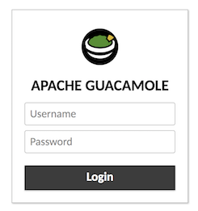
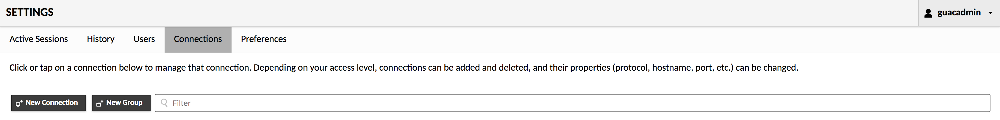
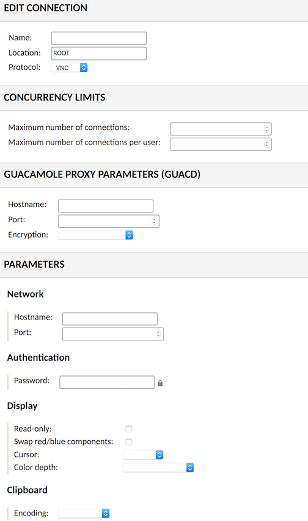
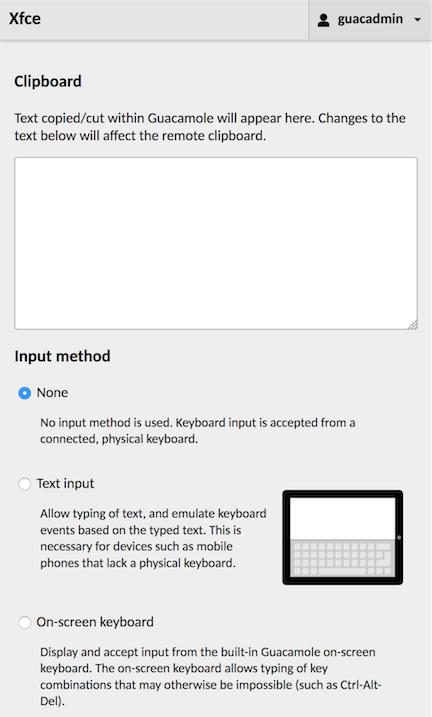
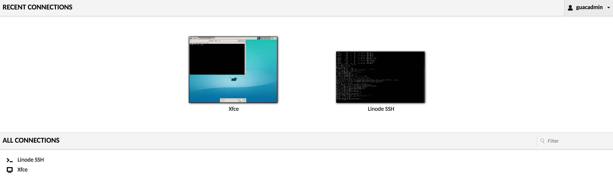

Virtual Cloud Desktop Using Apache Guacamole
Updated by Sam Foo Written by Sam Foo
Apache Guacamole is an HTML5 application useful for accessing a remote desktop through RDP, VNC, and other protocols. You can create a virtual cloud desktop where applications can be accessed through a web browser. This guide will cover the installation of Apache Guacamole through Docker, then access a remote desktop environment hosted on a Linode.
Install Docker
The installation method presented here will install the latest version of Docker. Consult the official documentation to install a specific version or if Docker EE is needed.
These steps install Docker Community Edition (CE) using the official Ubuntu repositories. To install on another distribution, see the official installation page.
Remove any older installations of Docker that may be on your system:
sudo apt remove docker docker-engine docker.ioMake sure you have the necessary packages to allow the use of Docker’s repository:
sudo apt install apt-transport-https ca-certificates curl software-properties-commonAdd Docker’s GPG key:
curl -fsSL https://download.docker.com/linux/ubuntu/gpg | sudo apt-key add -Verify the fingerprint of the GPG key:
sudo apt-key fingerprint 0EBFCD88You should see output similar to the following:
pub 4096R/0EBFCD88 2017-02-22 Key fingerprint = 9DC8 5822 9FC7 DD38 854A E2D8 8D81 803C 0EBF CD88 uid Docker Release (CE deb)Add the
stableDocker repository:sudo add-apt-repository "deb [arch=amd64] https://download.docker.com/linux/ubuntu $(lsb_release -cs) stable"Update your package index and install Docker CE:
sudo apt update sudo apt install docker-ceAdd your limited Linux user account to the
dockergroup:sudo usermod -aG docker $USERNote
After entering theusermodcommand, you will need to close your SSH session and open a new one for this change to take effect.Check that the installation was successful by running the built-in “Hello World” program:
docker run hello-world
Initialize Guacamole Authentication with MySQL
MySQL will be used in this guide, but PostgreSQL and MariaDB are supported alternatives.
Pull Docker images for guacamole-server, guacamole-client, and MySQL.
docker pull guacamole/guacamole docker pull guacamole/guacd docker pull mysql/mysql-serverCreate a database initialization script to create a table for authentication:
docker run --rm guacamole/guacamole /opt/guacamole/bin/initdb.sh --mysql > initdb.sqlGenerate a one-time password for MySQL root. View the generated password in the logs:
docker run --name example-mysql -e MYSQL_RANDOM_ROOT_PASSWORD=yes -e MYSQL_ONETIME_PASSWORD=yes -d mysql/mysql-server docker logs example-mysqlDocker logs should print the password in the terminal.
[Entrypoint] Database initialized [Entrypoint] GENERATED ROOT PASSWORD: <password>Rename and move
initdb.sqlinto the MySQL container.docker cp initdb.sql example-mysql:/guac_db.sqlOpen a bash shell within the MySQL Docker container.
docker exec -it example-mysql bashLog in using the one-time password. No commands will be accepted until a new password is defined for
root. Create a new database and user as shown below:bash-4.2# mysql -u root -p Enter password: Welcome to the MySQL monitor. Commands end with ; or \g. Your MySQL connection id is 11 Server version: 5.7.20 Copyright (c) 2000, 2017, Oracle and/or its affiliates. All rights reserved. Oracle is a registered trademark of Oracle Corporation and/or its affiliates. Other names may be trademarks of their respective owners. Type 'help;' or '\h' for help. Type '\c' to clear the current input statement. mysql> ALTER USER 'root'@'localhost' IDENTIFIED BY 'new_root_password'; Query OK, 0 rows affected (0.00 sec) mysql> CREATE DATABASE guacamole_db; Query OK, 1 row affected (0.00 sec) mysql> CREATE USER 'guacamole_user'@'%' IDENTIFIED BY 'guacamole_user_password'; Query OK, 0 rows affected (0.00 sec) mysql> GRANT SELECT,INSERT,UPDATE,DELETE ON guacamole_db.* TO 'guacamole_user'@'%'; Query OK, 0 rows affected (0.00 sec) mysql> FLUSH PRIVILEGES; Query OK, 0 rows affected (0.00 sec) mysql> quit ByeWhile in the bash shell, create tables from the initialization script for the new database.
cat guac_db.sql | mysql -u root -p guacamole_dbVerify successful addition of tables. If there are no tables in
guacamole_db, ensure the previous steps are completed properly.mysql> USE guacamole_db; Reading table information for completion of table and column names You can turn off this feature to get a quicker startup with -A Database changed mysql> SHOW TABLES; +---------------------------------------+ | Tables_in_guacamole_db | +---------------------------------------+ | guacamole_connection | | guacamole_connection_group | | guacamole_connection_group_permission | | guacamole_connection_history | | guacamole_connection_parameter | | guacamole_connection_permission | | guacamole_sharing_profile | | guacamole_sharing_profile_parameter | | guacamole_sharing_profile_permission | | guacamole_system_permission | | guacamole_user | | guacamole_user_password_history | | guacamole_user_permission | +---------------------------------------+ 13 rows in set (0.00 sec)Leave the bash shell.
exit
Guacamole in Browser
Start guacd in Docker:
docker run --name example-guacd -d guacamole/guacdLink containers so Guacamole can verify credentials stored in the MySQL database:
docker run --name example-guacamole --link example-guacd:guacd --link example-mysql:mysql -e MYSQL_DATABASE='guacamole_db' -e MYSQL_USER='guacamole_user' -e MYSQL_PASSWORD='guacamole_user_password' -d -p 127.0.0.1:8080:8080 guacamole/guacamoleNote
To see all running and non-running Docker containers:
docker ps -aIf
example-guacamole,example-guacd, andexample-mysqlare all running, navigate tolocalhost:8080/guacamole/. The default login credentials areguacadminand passwordguacadmin. This should be changed as soon as possible.
VNC Server on a Linode
Before sharing a remote desktop, a desktop environment and VNC server must be installed on a Linode. This guide will use Xfce because it is lightweight and doesn’t excessively consume system resources.
Install Xfce on the Linode.
sudo apt install xfce4 xfce4-goodiesAlternately Unity if there are less constraints on system resources:
sudo apt install --no-install-recommends ubuntu-desktop gnome-panel gnome-settings-daemon metacity nautilus gnome-terminalInstall VNC server. Starting VNC server will prompt the user for a password.
sudo apt install tightvncserver vncserverThis will prompt for a password in addition to a view-only option. The maximum password length is 8 characters. For setups requiring more security, deploying Guacamole as a reverse proxy with SSL encryption is highly recommended.
You will require a password to access your desktops. Password: Verify: Would you like to enter a view-only password (y/n)?Ensure to start the desktop environment the end of
.vnc/xstartupotherwise only a gray screen will be displayed.echo 'startxfce4 &' | tee -a .vnc/xstartupAlternate Unity configuration example:
- ~/.vnc/xstartup
-
1 2 3 4 5 6 7 8 9 10 11 12 13 14#!/bin/sh xrdb $HOME/.Xresources xsetroot -solid grey #x-terminal-emulator -geometry 80x24+10+10 -ls -title "$VNCDESKTOP Desktop" & #x-window-manager & # Fix to make GNOME work export XKL_XMODMAP_DISABLE=1 /etc/X11/Xsession gnome-panel & gnome-settings-daemon & metacity & nautilus &
New Connection in Guacamole
VNC, RDP, SSH, and Telnet are supported. This section of the guide will show how to navigate the browser interface and add a new connection.
Before connecting to the VNC server, create an SSH tunnel replacing
userandexample.comwith the Linode’s user and public IP.ssh -L 5901:localhost:5901 -N -f -l user example.comIn the Guacamole dashboard, click the top right drop down menu and select Settings. Under Connections, press the New Connection button.

Under Edit Connection, choose a name. Under Parameters, the hostname is the public IP of the Linode. The port is 5900 plus the display number - in this case, port 5901. Enter the 8 character password.

The official documentation has detailed descriptions of all parameter names.
Note
If you have multiple displays running on the same Linode, increment the port number for each display: 5902, 5903, etc. If your remote displays are hosted on different Linodes, each display should still use port 5901.From the top right drop down menu, click Home. The new connection is now available.
CTRL + ALT + SHIFT - Opens menu for clipboard, keyboard/mouse settings, and the navigation menu.

Press back on the browser to return to the Home menu.
Additional connections can be made, and simultaneous connections can be made in new browser tabs.

This guide aimed to streamline the installation process through Docker and demonstrate remote desktop with Apache Guacamole as quickly as possible. There are many features such as screen recording, two factor authentication with Duo, file transfer via SFTP, and much more. As an Apache Incubator project, expect to see further developments in the near future.
More Information
You may wish to consult the following resources for additional information on this topic. While these are provided in the hope that they will be useful, please note that we cannot vouch for the accuracy or timeliness of externally hosted materials.
Join our Community
Find answers, ask questions, and help others.
This guide is published under a CC BY-ND 4.0 license.